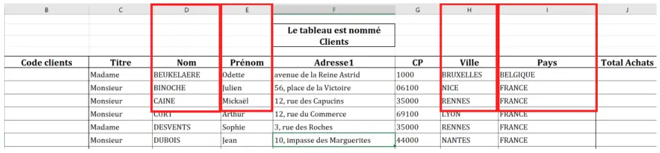
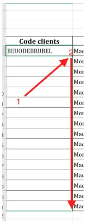
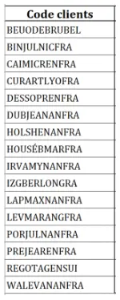
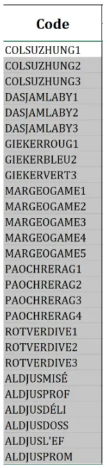
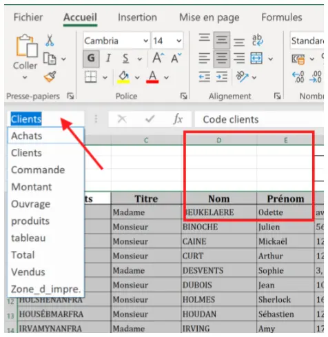
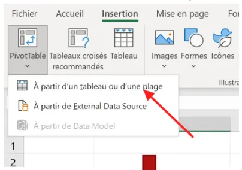
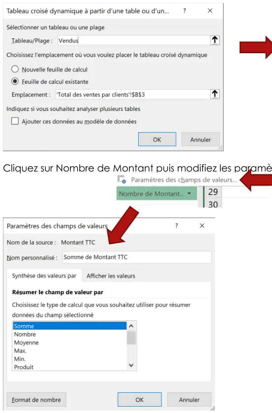
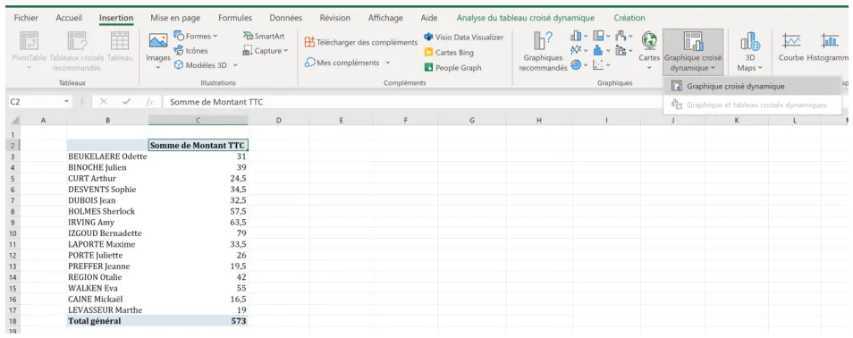
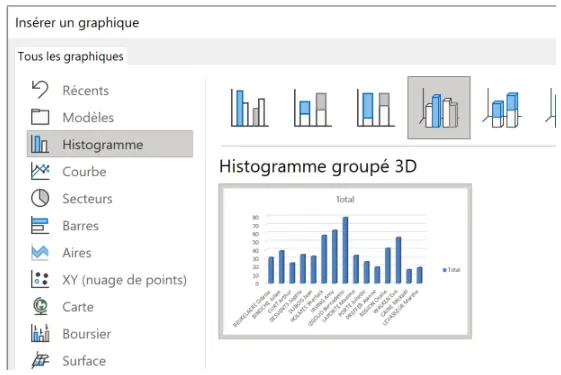

TP du Module 3 - Notions de base sur Excel Avant de démarrer ce TP, il convient d’avoir suivi les vidéos du module ..
| • | L’ensemble du code client devant être en majuscules, on utilisera en premier lieu la |
fonction MAJUSCULE().
| • | Il faut ensuite isoler les colonnes qui contiennent les informations à concaténer : |
| • | La fonction GAUCHE() permet d’isoler les premiers caractères d’une cellule en en |
spécifiant le nombre après un « ; ». On peut maintenant commencer à dessiner le squelette de notre formule : =MAJUSCULE(GAUCHE(D6;3)&GAUCHE(E6;3)&GAUCHE(H6;3)&GAUCHE(I6;3))
| • | Il ne reste qu’à étirer la formule sur les cases en dessous. |

| • | Même méthode que pour l’exercice précédent. L’ensemble des données doivent être |
en majuscules en récupérant les 3 ou 4 premiers caractères. Dans le cas de la colonne Tome, il ne faudra récupérer que le dernier caractère. =MAJUSCULE(GAUCHE(F7;3)&GAUCHE(G7;3)&GAUCHE(C7;4)&DROITE(E7;1))
| • | Il ne reste qu’à étirer la formule sur les cases en dessous. |


Numéros de commande On peut utiliser les fonctions ANNEE, MOIS et JOUR afin de pouvoir les reconstituer en date inversée.
=DROITE(ANNEE(C6);2)&MOIS(C6)&JOUR(C6)&D6
On s’aperçoit que le résultat n’est pas satisfaisant : les mois et jours inférieurs à 10 ne remontent qu’un seul chiffre. Il faudra donc utiliser des conditions pour tester la valeur et éventuellement ajouter un 0 pour les chiffres inférieurs ou égaux à 9. =DROITE(ANNEE(C6);2)&SI(MOIS(C6)>9;MOIS(C6);"0"&MOIS(C6))&SI(JOUR(C6)>9;JOUR(C6);"0"&JOUR(C6))&D6
| • | En cas de case vide, une erreur se produira. Il est possible de « fermer » la formule en |
ajoutant un test de case vide : =SI(OU(C8="";D8="");"";DROITE(ANNEE(C8);2)&SI(MOIS(C8)>9;MOIS(C8);"0"&MOIS(C8))&SI(J
| • | Il ne reste qu’à étirer la formule sur les cases en dessous. |

| • | Sur la feuille Liste des clients, il faut identifier le tableau Clients en cliquant sur le menu |
suivant :
| • | Nous pouvons maintenant faire référence à ce tableau dans la fonction recherchev() |
| • | D6 symbolise la valeur de la recherche (code client), à comparer avec notre tableau |
Clients en récupérant la 3ème colonne du tableau (nom) puis la 4ème (prénom).
| • | Il faudra ajouter un espace symbolisé par &" "& qui permettent de concaténer les |
champs nom et prénom avec un espace entre eux. =RECHERCHEV(D6;Clients;3;FAUX)&" "&RECHERCHEV(D6;Clients;4;FAUX) Titre et Tome
| • | Même procédé que pour la question précédente : |
| • | Dans la feuille Liste des produits vendus, on va rechercher dans la colonne F6, à |
comparer avec la 2e colonne du tableau Ouvrage, ajouter un espace, et englober dans la fonction DROITE(), qui ne récupérera que le dernier caractère, une recherche toujours basée sur le code produit mais cette fois sur la 4ème colonne du tableau Ouvrage.
=RECHERCHEV('Liste des produits vendus '!F6;Ouvrage;2;FAUX)&" "&DROITE(RECHERCHEV('Liste des produits vendus '!F6;Ouvrage;4;FAUX);1)
| • | Il faut effectuer une recherchev() basée sur le code produit au sein de la 7ème colonne |
du tableau Ouvrage.
=RECHERCHEV(F6;Ouvrage;7;FAUX)

On peut ajouter un SIERREUR() avec comme valeur "" afin d’éviter des erreurs de fonction.
=SIERREUR(RECHERCHEV(F6;Ouvrage;7;FAUX);"")
| • | Il faut dans un premier temps vérifier que la cellule supérieure est identique, ou si la |
cellule montante est vide.
| • | Si ce test est validé, le contenu de la cellule Montant de la commande devrait être vide. |
| • | On va ensuite additionner les montants en fonction du nombre d’occurrences trouvées |
du numéro de commande grâce à la fonction SOMME.SI.ENS
=SI(OU(B7=B8;H7="");"";SOMME.SI.ENS(Montant;Commande;B7))
| • | En faisant référence à la feuille Liste de produits vendus, il faut compter le nombre |
d’occurrences dans le tableau des différentes références produit.
| • | La fonction NB.SI.ENS permet d’effectuer ces actions et de les reporter en les comparant |
au code produit de la colonne B.
=NB.SI.ENS(produits;B7)
| • | Il suffit de diviser le nombre de ventes de chaque ouvrage par le total des ventes : |
=I7/SOMME($I$7:$I$33)
| • | Sur la feuille Total des ventes par clients, créer un tableau croisé dynamique : |

Cliquez sur Nombre de Montant puis modifiez les paramètres des champs Graphique dynamique croisé
| • | Cliquez sur votre tableau croisé dynamique et allez dans Insertion - Graphique croisé |
dynamique.

| • | Sélectionnez l’histogramme groupé 3D. |
| • | En basant la recherche sur la concaténation des Noms et prénoms de la feuille Liste des |
Clients, il faut comparer cela aux résultats de notre tableau croisé dynamique pour reporter les valeurs dans la colonne J de la liste des clients. =SIERREUR((RECHERCHEV(D6&" "&E6;'Total des ventes par clients'!$B$3:$C$19;2;FAUX));"")

